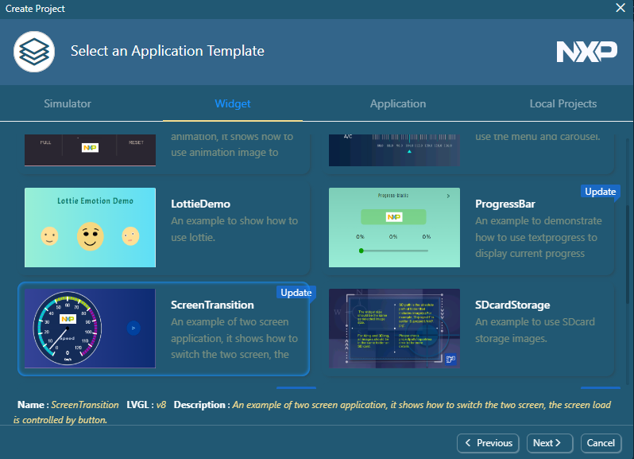
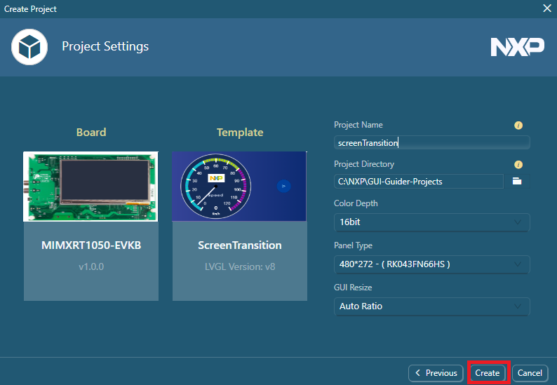

Quick start
You do not need anything else to start working but to install the GUI Guider. Here, you can choose to create a project with official examples or the local projects.
Create a project based on template
To create a project, perform the following steps:- Click the Create a new project button.
Figure: Create a project  Note: Alternatively, you can select File > New in the GUI editor.
Note: Alternatively, you can select File > New in the GUI editor.The New Project wizard dialog box appears.
- Select the LVGL version that you want to use. For example, v8.
- Click Next or double click.
The Select a Board Template page of the wizard appears.
Click the Simulator, i.MXRT, or LPC tab and select a board from the template list. For example, select MIMXRT1050-EVKB. Click Next or double click.
- Click Next or double click.
The Select an Application Template appears.
- Select a GUI application template. For example, click the Widget tab and select ScreenTransition.
Figure: Select a GUI application template 
- Click Next or double click.
The Project Settings page appears.
- Configure the basic information of the project, including Project Name, Project Directory, Panel Type, Color Depth, and GUI Resize. Then click Create.Note: To ensure that the GUI application is displayed normally on the board, select Auto Ratio. To customize the size of the application display, set the scaling ratio of width and height in the custom ratio.
Figure: Set up project settings 
Note: GUI Guider supports multiple panel types for each board. The new panel is selected by default. Check the display type on your board and select the right panel type.
Create a project based on local project
The function can support a new project based on a local project. The auto-scaling function is useful when you want to reuse an application design based on a particular display size. It is recommended that you create a project based on an existing local project as a template.

Run simulator

To run the simulator, click the C or MicroPython button. By doing this, the IDE automatically generates the related code and launches a new simulator window.